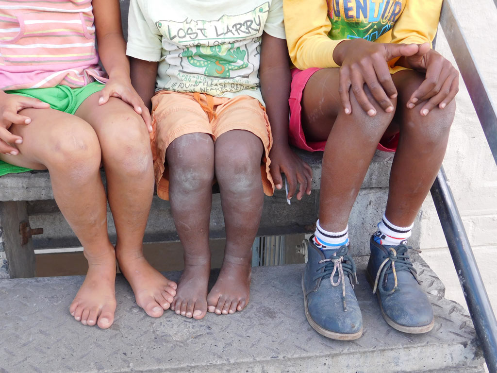
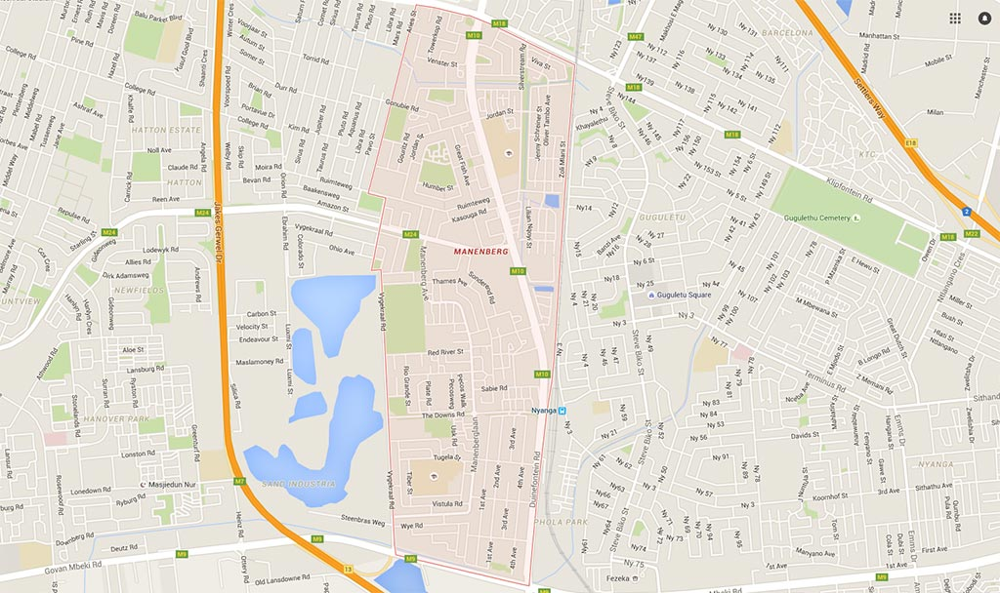
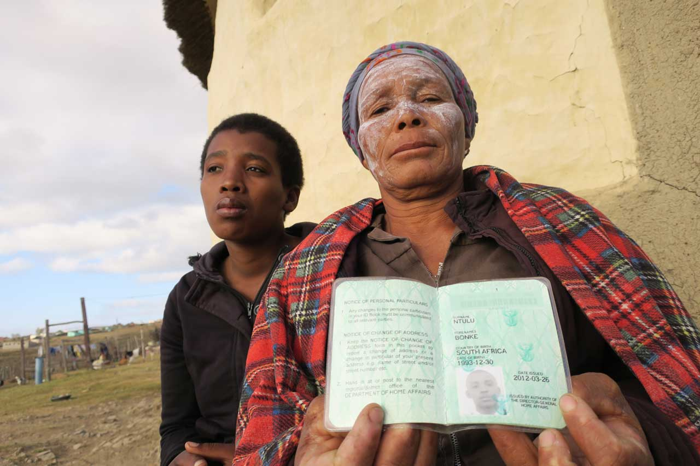

CAUGHT IN THE CROSSFIRE: Ten-year-old "Matthew", right, who attends school in the Manenberg area, has been caught in gang crossfire four times. He has avoided being shot, but fears for his life. PHOTO: DANIELA Q LÉPIZ
Child mortality in South Africa
What is killing our children?
by DANIELA Q LÉPIZ and ROXANNE JOSEPH
Overcoming the difficulties of maths, science and languages is not the only challenge pupils face when they go to school each day.
By the time the sun sets, at least one child in South Africa will have decided to take their own life; another will have died because of violence; five will have lost their lives because of accidents; and 12 will have succumbed to various illnesses.
At the beginning of every year, the department of basic education conducts the Snap Survey for Ordinary Schools to identify the causes of pupil deaths in 6 000 schools across South Africa.
This does not include every child in the country – only those registered at the schools that choose to participate.
City Press and Code for South Africa analysed the data to better understand the causes of deaths recorded by schools.
More than 20 000 pupil deaths were recorded from 2012 to 2014.
Of these, the majority (61%) of deaths were due to illness.
Accidents accounted for just more than a quarter of deaths, while suicides and violence/homicides caused almost 6% of deaths each.
According to the basic education department, the data is “used to inform education policy makers and managers ... Provincial education departments also use the data for decision-making and planning purposes.”
Elijah Mhlanga, departmental spokesperson, says a lack of social support underlies many of these deaths.
“Many children in the school system do not have parents, which means pupils often do not have the support they need or someone to talk to,” he adds.
The department is working with the department of social development to try to tackle the issue.
“They also need to be asking if the communities are playing their part in providing the type of environment and support that pupils need,” says Mhlanga.
The department of basic education declined to comment about the accuracy of the data submitted and factors that would motivate schools to reveal what could be damning information.
Manenberg learners caught in the crossfire
Daniel*, who lives in Manenberg, Cape Town, will spend the rest of his life in a wheelchair. He was caught in the crossfire of a gang shooting and is now paralysed from the neck down.
His mother, the sole breadwinner of the family, goes off to work in a factory just behind Manenberg each day, leaving her child in the care of family and neighbours as he now requires round-the-clock attention.
He also needs a new wheelchair, more nappies and continuous checkups at the doctor, but they receive no government assistance and are struggling.
Matthew* was slightly luckier. He does not bear any physical scars, but carries the burden of trauma wherever he goes. He is reluctant to speak about the shootings, rocking his feet back and forth, and he refuses to look anyone in the eye. He is just 10 years old, but already knows enough about gangs and guns.
He has just come from a soccer match, evident by the dust and dirt that covers his red shorts, blue shoes, knees and legs.
Life seems peaceful as the shootings have stopped. But they will inevitably start up again. Neighbours refer to it as a “waiting period”.
GANGLAND: The area highlighted is the Mannenberg area, where children have learnt to dive for cover when gangs start shooting and the bullets start flying
Manenberg is known as a volatile and violent area, where different gangs “own” territory and where, to reach school, you first have to make it through the various ganglands.
According to his mother, he has already been caught in the middle of gang shootings four times.
There are hundreds of learners like Matthew in the area who have braved the violence to get an education.
Shakirah Groenewald (18) dropped out of Grade 10 two years ago, in part because of gang violence. “Some of us survived; we made it through the bullets and eventually got to school. But it was a tough challenge,” she says.
Sixteen-year-old Jody Meyer, currently in Grade 8, says they are all used to the shootings by now.
She describes how, when it happens – often within the vicinity of the school – the learners already know to drop to the ground and “wait for it to be over”.
“It is normal,” she says, shrugging casually.
In this same area in 2013, the police temporarily closed 14 schools because of the gang violence and frequent shootings.
In April this year, nine subsequent days of shooting left many dead.
One incident happened right in front of one of the area’s high schools. Learners had to walk past the dead body as they made their way in and out of school.
In the Western Cape, 11% of deaths reported by schools in 2012 were homicides or somehow related to violence. This more than doubled to 23% in 2014.
At national level, violence-related deaths represent 6%, with the Western Cape being the most volatile province.
The City of Cape Town is the metro that recorded the highest number of deaths in schools, with 137 recorded in three years.
This was followed by Johannesburg with 96, eThekwini with 72 and Ekurhuleni with 67.
The Western Cape department of education says that while schools provide safe havens for pupils who live in communities plagued by violence and gangsterism, they are not immune from the social issues that already exist.
According to the 2012 National School Violence Study, 28.7% of pupils in the Western Cape reported that they had been victims of violent crime in the year to August 2012 – the second highest proportion in South Africa.
Violence does not only happen outside of school, but also inside. Just two weeks ago, a pupil was stabbed by one of his peers at a school 10km from Manenberg in Cape Town.
Elijah Mhlanga, spokesperson for the department of basic education, acknowledges that fights among pupils at schools are increasing.
In April last year, the department announced it had overseen the implementation of the National School Safety Framework for safer schools, in partnership with the Centre for Justice and Crime Prevention, and supported by the UN International Children’s Fund. This programme seeks to enhance school culture by improving school management and classroom practice.
Each one of the dots represent a single fatal incident reported by a school between 2012 and 2014. The colour code at the bottom right of the map indicates the type of incident VISUALISATION: LAILAH RYKLIEF
Context matters
“It is need that drives children to [join] gangs. Here, for a boy, it is difficult. He has to have double the amount of guts as a woman,” says Rugchanda Pascoe, who heads up the Manenberg Safety Forum.
“That is [the] only [way] to be alive. Because of how our men were raised to be tough, to defend, this is what the system has created.”
Pascoe’s perception matches the findings of the latest annual SA Child Gauge publication of the Children’s Institute at the University of Cape Town: “Young men living in poor, urban areas are at the greatest risk of interpersonal violence, whereas girls and young women are at the highest risk of sexual violence. Dominant construction of masculinity – including norms that demand toughness, strength and avoiding expressions of emotion and weakness – increases the chance of men becoming both victims and perpetrators of violence.”
Shanaaz Mathews, director of the Children’s Institute, says that despite legislation aimed at providing an enabling environment for violence prevention, pupils are exposed to violence in multiple settings.
“Many communities are very deprived. Violence is intertwined with poverty and associated factors. Thus, the school is a mere extension of what is happening in the home and community,” she says.
“The effect of being exposed to violence at that level, on a daily basis, suggests that it becomes normalised and internalised.”
Thus, she adds, children get drawn into gangs at a young age and girls get involved in violent intimate relationships, “thinking this is normal”.
Asked to give details of the strategies in place to tackle the problem, Western Cape police spokesperson Lieutenant Colonel André Traut describes numerous programmes, such as the safe schools programme and the anti-gang strategy, which are “effectively” addressing the issue.
“Crime prevention patrols ... in the vicinity of schools in gang-affected areas are frequently conducted to ensure the safety of pupils and education staff. Station commanders also apply unique ... initiatives best suited for their area,” Traut says, adding that police also conduct awareness campaigns.
Mathews, who has worked in the area of violence for the past 20 years, says they have not seen a decline in the level of violence in these communities. “It has become intergenerational, with parents themselves having been raised in the same circumstances”. This, she says, influences their parenting practices. “To see shifts, we must engage in a large-scale prevention programme focusing on all levels – family, community and school, as well as working with the individual.”
Accident robbed me of my son, maimed my daughter
by LUBABALO NGCUKANA
The day Nolungisile Ntulu’s son died in an accident on the way to school remains the most painful of her life.
“I had lost my pillar,” says Nolungisile (59) of the death of her 19-year-old son, Bonke, in 2013.
“He was such a good child. He wanted to study medicine in Cuba and come back to work in the country and build me a house – a proper house which I could be proud to live in,” she says, fighting back tears.
The mother of five lives in two dilapidated rondavels in Siqikini village in Libode, Eastern Cape.
On March 6 2013, the bakkie in which Bonke and his sister Buseka – along with 10 other pupils from Mabalengwe Senior Secondary School in Mthatha – were travelling, plunged down an embankment, killing six of its young passengers.
Bonke, who was in Grade 10 at the time, was in the front seat with another pupil and the driver. Buseka, now 23, was among the group of 10 pupils crammed in the back of the vehicle. She survived the crash but sustained severe head and neck injuries.
PAINFUL LOSS: Bonke Ntulu's mother, Nolungisile, and her daughter Buseka, who survived the accident in which Bonke was killed PHOTO: LUBABALO NGCUKANA
Nolungisile says the accident happened about 10km from their home, on the way to the school in the neighbouring village of Coza, about 40km away. “Bonke was passionate about school, even though he started schooling at an older age. He wanted to be better than most rural children.
“He wanted to achieve something meaningful in life. He had a purpose,” she says.
Nolungisile still weeps whenever she passes the accident scene or the wrecked Toyota bakkie, which is still parked at Libode Police Station.
Buseka dropped out of school last month. She believes the head injuries she sustained in the crash left her mentally impaired and affected her progress at school.
“She is very forgetful. Her concentration span is very short. She has changed completely since the accident. She seems confused all the time,” Nolungisile said.
Buseka says she is no longer interested in school because, despite her efforts to concentrate and study hard, she has failed Grade 12 three times since 2013. She had never failed any grade before.
“I wanted to be a social worker to help poor and abused kids. I am not sure how I am going to achieve my dream.
“For now I am taking a break from school. Maybe I will feel better one day and go back.”
Bonke was the youngest of six children – four boys and two girls.
Nolungisile’s husband died in 1998. She tries to raise her children through money she earns from doing odd jobs. She earns R640 a month through the government’s Expanded Public Works Programme in her village, where she is fixing potholes on the road where her son was killed.
The two rondavels she lives in – one used as a kitchen; the other as a bedroom – are collapsing.
There are gaping holes in each of the grass-thatched roofs. The family use a fireplace on the floor to cook to save the little electricity money they have for lights only.
With no lawyer or help, Nolungisile and her daughter have travelled to East London and Mthatha to try to claim money for Buseka’s injuries.
“We have been to the Road Accident Fund (RAF) offices in East London twice – and twice to Mthatha, where Buseka has been examined by four different doctors.
“But nothing has happened. No money has been paid,” she says.
The trip to East London from Libode costs her R580 for the two of them, while a trip to Mthatha costs R120.
Nolungisile first went to the RAF in East London on May 19 2014. “I am praying that we can get money from [the fund] so that my daughter can get medical assistance for [her head] injuries or get access to a special school. She wants to go back to school.
“That is the least I want because my son is gone forever,” she says.
RAF spokesperson Thandeka Ngwenya confirmed that Buseka's claim had been lodged but declined to provide further details in the absence of an application in terms of the Promotion of Access to Information Act.
produced by Code for South Africa Data Journalism Academy in collaboration with City Press
Daniela Q LÉPIZ (words and data analysis, Code for South Africa)
Roxanne Joseph (words and video, Code for South Africa)
Lubabalo Ngcukana (words, City Press)
Lailah Ryklief (newsroom developer, Code for South Africa)